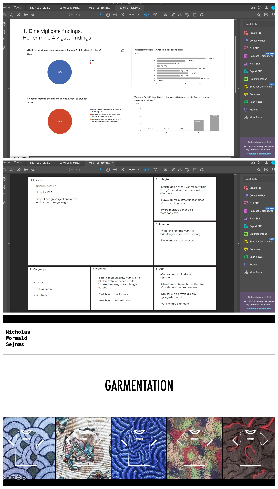

På dette tema fik vi grundlæggende forståelse for udviklingen af brugergrænseflader, samt hvilke teorier, værktøjer og metoder man kan benytte til research, og generelle test´s af en digital produktudvikling.

Disse redskaber vi blev introduceret til, var med til at give os en grundlæggende erfaring med udvalgte UX-metoder samt at lære os, hvordan man præsenterer et produkt, samt formidler de research- og testresultater til at videreudvikle et produkt.